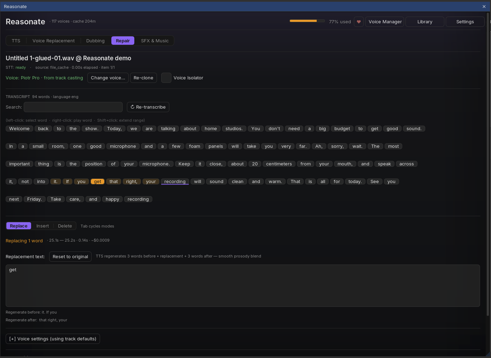
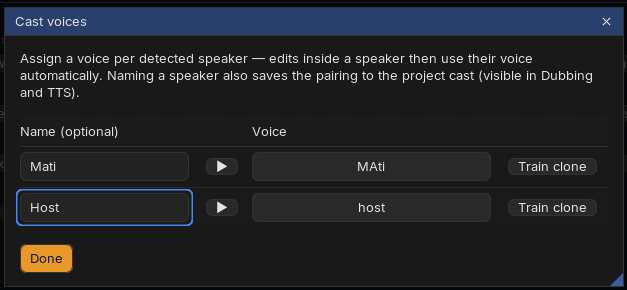

Core workflowFix a word in four clicks

-
Select the item in REAPER
Repair transcribes it automatically (or reuses the cached transcript - selecting the same item later costs nothing). The transcript appears as clickable word chips with a search box for long material.
-
Select the words
Left-click selects a word, Shift+click extends the range, right-click plays the word so you can confirm you have the right spot. The REAPER playhead also underlines the word it is passing through.
-
Choose the operation
Replace swaps the selection for new text. Insert adds words at the cursor between chips. Delete removes the selection and closes the gap cleanly. Tab cycles the three modes.
For Replace and Insert, Reasonate regenerates a few words on each side of the edit along with your new text, so the prosody flows through the splice instead of jumping. The panel shows exactly which words will be regenerated, and the estimated cost.
-
Apply and listen
The regenerated phrase is spliced into the take at millisecond precision (text-to-audio alignment plus acoustic analysis pick the cleanest cut points, with crossfades in silences). The item is split around the edit; the new middle part carries the fix.
The original audio stays complete inside the new item - you can drag its edges in REAPER to reveal more or less, and Cmd+Z undoes the whole edit. The panel even notices external undos and resyncs itself; there is also an explicit Undo last edit button.
Whose voice?Voices and clones
The fix has to sound like the speaker. The header shows which voice will be used and where it comes from - for example Voice: Piotr Pro - from track casting. Reasonate resolves the voice in this order:
- A voice you assigned to this speaker (see casting below),
- a voice linked to this character in the project's Cast Registry,
- the track's voice (as in Voice Replacement),
- or, when there is nothing yet: Reasonate offers to train an instant clone from the item itself.
Training a clone takes seconds. For multi-speaker material a picker opens first: choose the speaker, and Reasonate pre-selects their cleanest regions (you can adjust and preview the training audio before spending anything). Re-clone retrains after you improve the source; Voice Isolator pre-cleans noisy material for both transcription and cloning.
Multiple voices in one fileSpeaker casting
When transcription detects several speakers, a banner offers Cast voices: a small table with each speaker, a 5-second sample button, a voice picker and a Train clone shortcut. Name the speakers - named characters go to the Cast Registry and follow you into Dubbing and TTS.

- Every edit automatically uses the voice cast for the speaker of the selected words.
- If the registry knows a better fit, a hint appears: "Selected words are spoken by X" with a one-click Use X's voice.
- Selected a range that spans two speakers? Repair refuses to guess: use Split at speaker boundary and fix one speaker at a time.
Fine controlPace and delivery
- Speed slider - nudge the generated phrase faster or slower before applying.
- Match pace (optional, off by default; Settings → Repair) - Reasonate measures the take's syllable rate, generates at a matching pace, and picks the better of two renders when the first misses. Natural pacing without the toggle is often already right; try the toggle on fast, dense reads.
- Voice settings - a collapsible section overrides stability and similarity for this one edit.
Repair happily handles long items (a warning appears above 25 minutes - transcription cost and panel size grow with length). For very long sessions, split the item first and repair the part that needs it.